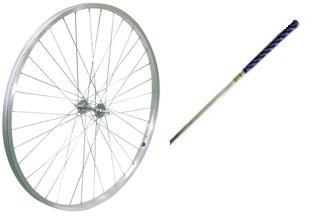
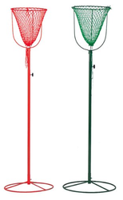

運動会の種目をいろいろ紹介していく予定です。
各地区における運動会の種目選定の参考になれば幸いです。
グレイトカモン
１チーム５〜１０人程度で競う競技です。他に、役員が数名。
言葉で説明するよりも、図の方がわかりやすいので、こちらの競技の流れをご覧下さい。
にこにこキックリレー
サッカーが得意な人は、ドリブルが上手です。
でも、ボールが２個だったら・・・？
この競技は、２個のボールを足で蹴って、２０ｍ先にある等旗を回って帰ってくる競技です。
２個のボールがバトン代わり。１チーム１０人前後で、チーム対抗のゲームです。
上手な人でも、ボールが２個になると、勝手が違うようで。
こちらの写真では、隣のチームがボールを蹴り込んでしまい、めちゃくちゃになっています。
湘南けいりん
自転車のリムを棒で転がし、リレーを行う競技です。
走るコースは、通常のトラック。当然、カーブがあります。ここを巧みに走り抜けるのが腕の見せ所であり、勝負の分かれ目でもあります。
昔の子供たちは普通に遊んでいた内容ですが、近頃の若いもんたちは未経験なわけでして。
リムのコントロールに四苦八苦する様が見ものです。

力くらべ
これもトラックを走るリレー競技です。
リレー競技なのですが・・・・なんと、バトンは土嚢。
腕だけで担いでいると走れません。しっかり肩に乗せて安定させられるかが、勝負の分かれ目。
そしてもちろん、コーナリングも大変。
自分の体重以外に、１０ｋｇ以上の土嚢を抱えているわけですから、慎重に走らないと転びます。
スポーツ玉いれ

「いくつ入れられるか？」
ではなく、
「何秒で入れられるか？」
です。
100個の玉をどれだけ早く入れ終えるかが勝負です。最後の玉はそれと分かるように特別仕様のアンカーボールです。
玉の数はチーム数や予選決勝で変えてもよいでしょう。50個〜100個あたりが目安です。
競技玉入れでは籠の高さは４・１２メートルですが、運動会では臨機応変に。
正式なルールは下記リンクをご覧ください。
アンカーボールは見ている人達が分かりやすいので準備したほうが良いでしょう。
調べていたら、籠が逃げる玉入れなんて競技もあるんですね。
これも面白そうです。